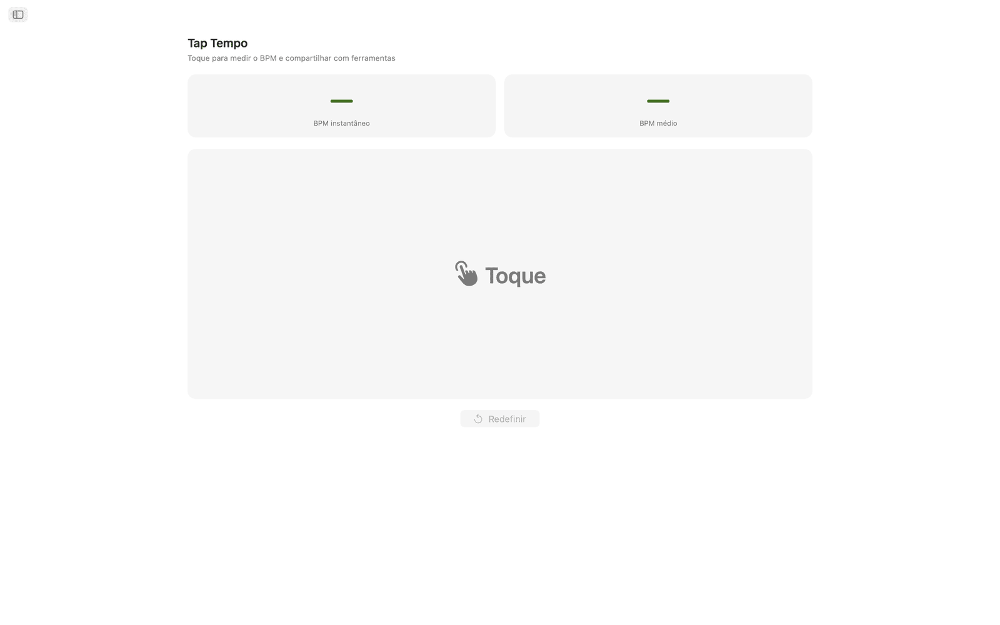
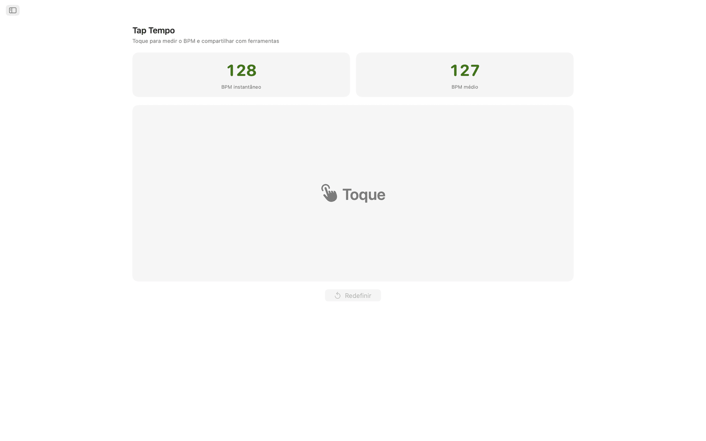
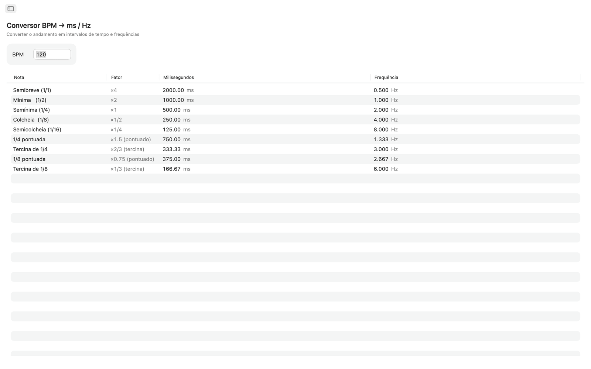
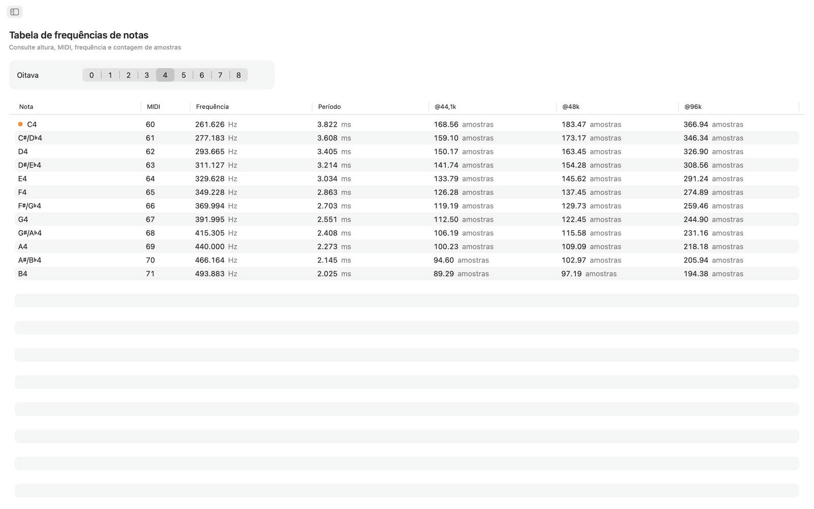
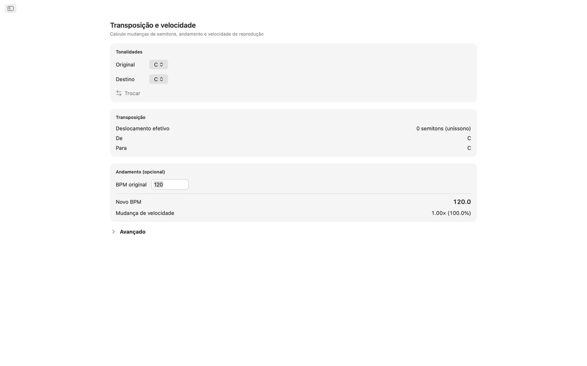
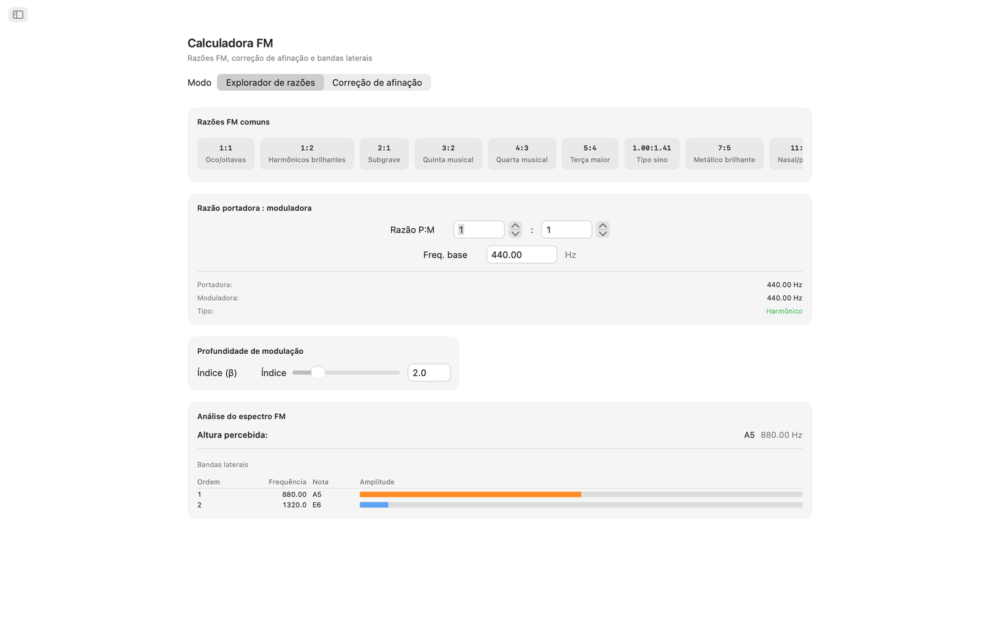
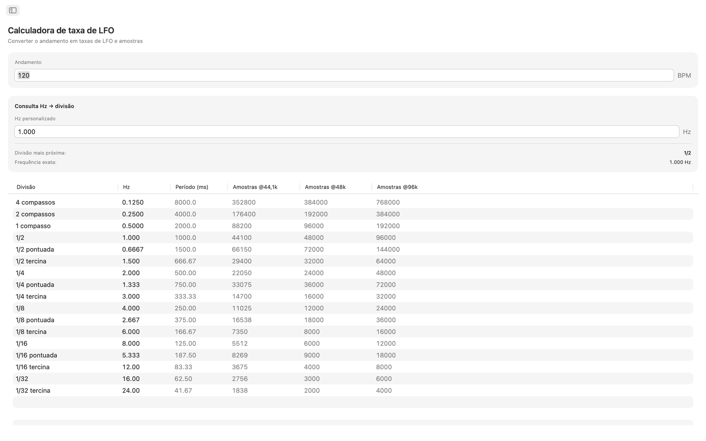
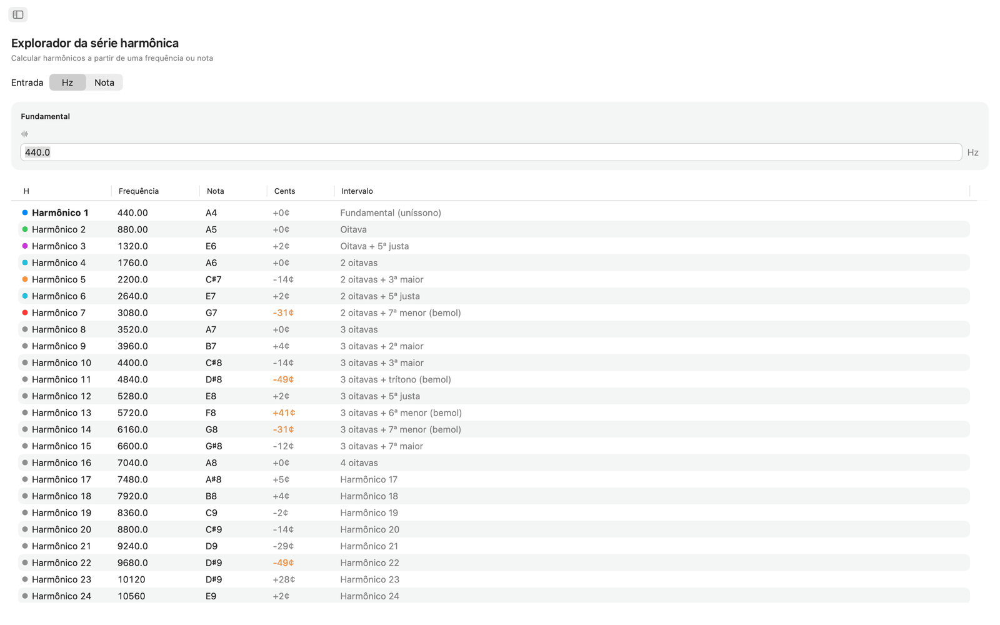
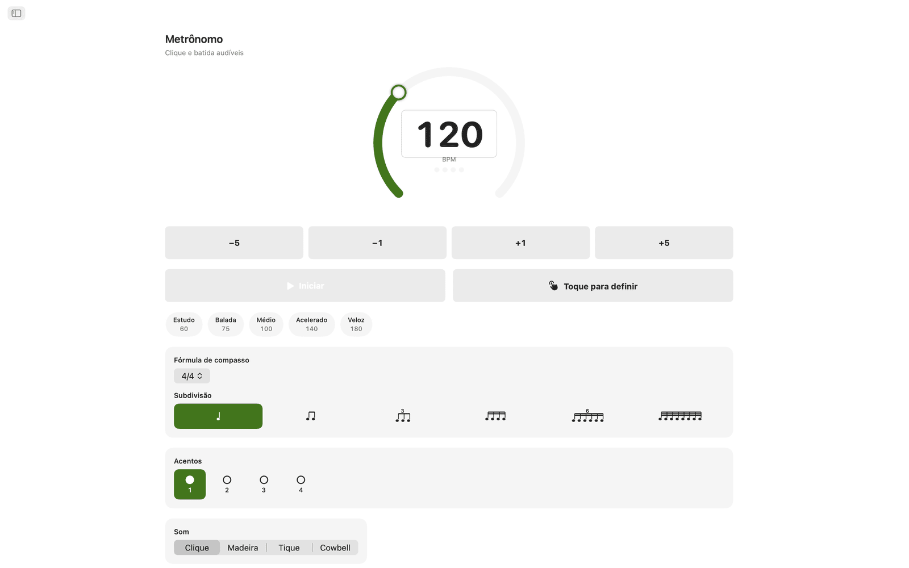
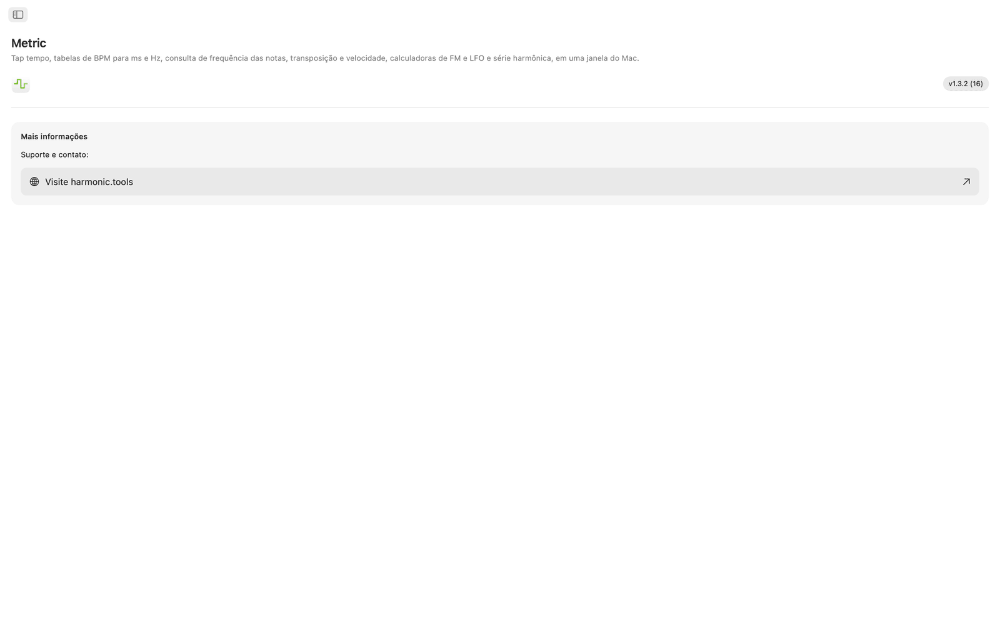

Metric para macOS
Um toolkit de tempo e frequência em janelas para macOS, com um metrônomo integrado. Ele calcula tempos de delay a partir de um BPM, razões e bandas laterais de FM, sincroniza um LFO com a batida e transpõe uma amostra, em uma janela redimensionável que você pode deixar aberta ao lado da sua DAW. Há suporte a Siri, Shortcuts e a um widget na Notification Center.
- Metrônomo com tap tempo e batidas visuais
- Conversor de BPM para ms / Hz (normal, pontuado, tercina)
- Tabela nota ↔ frequência (108 notas, A4 = 440 Hz)
- Transposição e velocidade, calculadora FM, taxas de LFO, 32 harmônicos
- Tap tempo na barra de menus, delay em ms ou Hz, além de metrônomo e notas
- Siri, Shortcuts e um widget de BPM na Notification Center
Capturas de tela
Inclui capturas de tela no modo claro e escuro que acompanham o tema do site.













Funcionalidades
- O metrônomo tem mostrador de tempo, tempo ajustável por toque, fórmulas de compasso, subdivisões e um indicador visual de batida.
- Clique no grande alvo de toque para medir o tempo. O Metric mostra o BPM do último toque e uma média móvel de até oito toques, e qualquer uma das leituras pode ir direto para o Conversor BPM, a Transposição ou a Taxa LFO com um clique.
- O conversor BPM → ms / Hz recebe um tempo e devolve valores normais, pontuados e tercinas para semibreve, mínima, semínima, colcheia e semicolcheia. Cada linha mostra milissegundos e frequência em Hz, para ajustar delay, pré-delay de reverb ou timing de sidechain sem calculadora.
- A tabela de frequência de notas lista as 108 notas cromáticas de C0 a B8. Cada nota mostra seu número MIDI, frequência em Hz, período em milissegundos e contagem de amostras a 44,1 kHz, 48 kHz e 96 kHz. O C central (C4) é destacado. Baseado em A4 = 440 Hz.
- Na transposição, escolha uma tonalidade original e uma de destino para ver o deslocamento em semitons, o nome do intervalo e o valor exato de transposição para a DAW. Com um BPM original, o Metric calcula o novo tempo e a razão de velocidade de reprodução. Um controle deslizante de cents (±100) e um controle deslizante de velocidade que cobre duas oitavas (±24 semitons) permitem o ajuste fino.
- A calculadora FM tem dois modos. O Explorador de Razões define razões de portadora e moduladora a partir de uma frequência base e oferece dez predefinições de FM, de oitavas ocas (1:1) a sinos inarmônicos (1:π). A Correção de afinação funciona ao contrário: escolha uma nota de destino e obtenha as frequências exatas de portadora e moduladora. Os dois modos mostram uma tabela de bandas laterais com até dez parciais, suas frequências, notas mais próximas e amplitudes com código de cores, controladas por um controle deslizante de índice de modulação.
- A calculadora de taxa LFO converte qualquer BPM em taxas de LFO em 17 divisões musicais, de quatro compassos até tercinas de 1/32. Cada linha mostra Hz, período em milissegundos e amostras por ciclo a 44,1 kHz, 48 kHz e 96 kHz. A busca reversa recebe qualquer valor em Hz e encontra a divisão musical mais próxima, com o erro indicado.
- O explorador da série harmônica parte de uma frequência ou de qualquer nota e lista os primeiros 32 harmônicos com frequência, nome da nota mais próxima, desvio em cents e rótulo de intervalo. Harmônicos de baixa ordem têm código de cores, e desvios maiores que 30 cents são destacados, o que facilita notar conteúdo inarmônico.
Tempo e afinação compartilhados
Toque um tempo uma vez e o Conversor BPM, a Transposição e a Taxa LFO passam a usar o mesmo BPM ao vivo. Frequência de Notas, Calculadora FM e Harmônicos usam A4 = 440 Hz.
Siri, Shortcuts e widget
Peça à Siri para iniciar ou parar o metrônomo, definir um BPM, marcar um tempo por toque, converter BPM em ms, encontrar a frequência de uma nota ou transpor um tempo. Cada ferramenta também é uma ação dos Shortcuts, e o widget de BPM mantém seu tempo na Notification Center.
Ferramentas na barra de menus
Marque o tempo pela barra de menus sem abrir o app. Com o botão direito, veja os tempos de delay em ms ou Hz e digite qualquer BPM. Metrônomo e notas são opcionais, e há ajustes para usar só a barra de menus e abrir no login.
No desktop
- Funciona totalmente offline: sem conta, sem anúncios, sem rastreamento
- App nativo macOS com navegação por barra lateral
- Interface compatível com modo escuro que segue a aparência do sistema
- Contagens de amostras a 44,1 kHz, 48 kHz e 96 kHz
- Janela redimensionável: mantenha-a aberta ao lado da sua DAW
Acessibilidade
Funciona com o VoiceOver e o Controle por Voz e pode ser usado pelo teclado, com as setas e a barra de espaço.
O Metric é grátis para testar por 7 dias. Depois do período de teste, o acesso completo é uma compra única, sem assinatura.